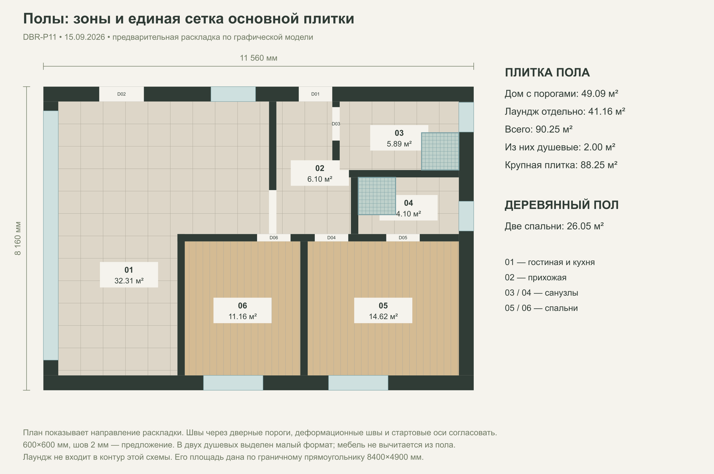
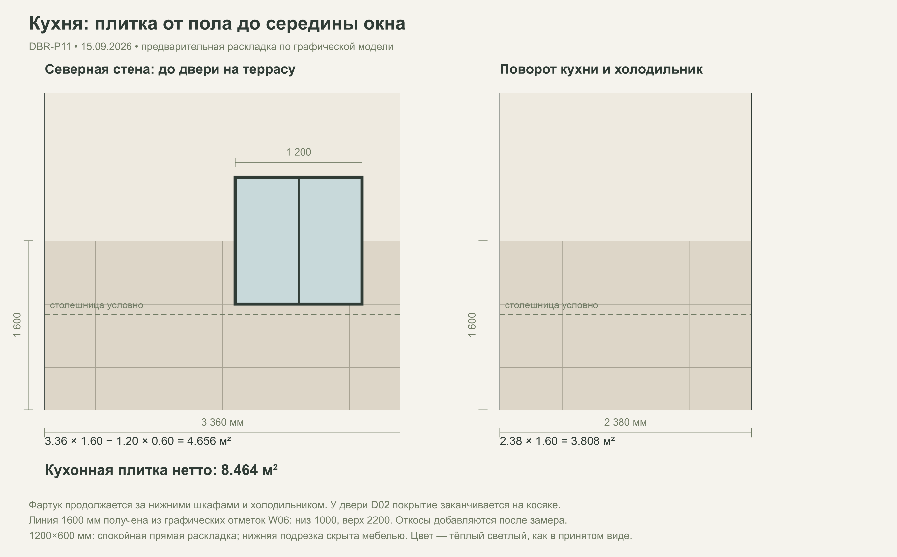
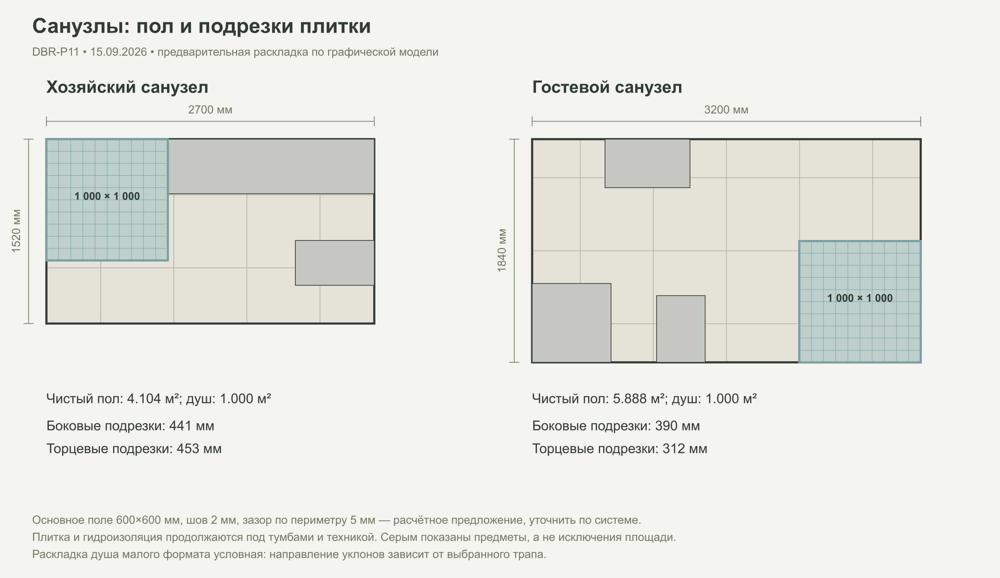
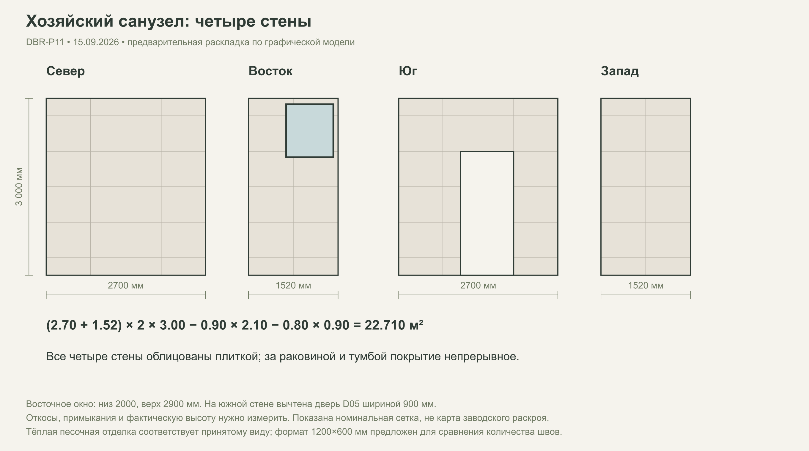
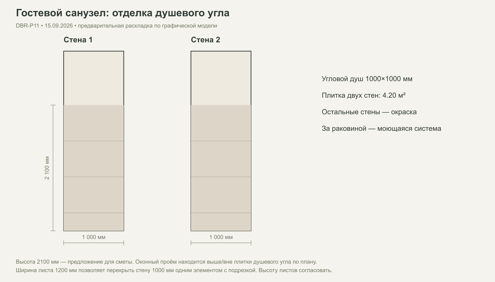
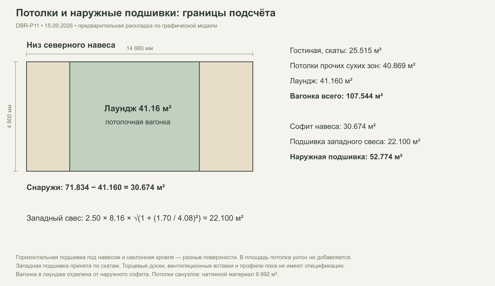

Дом и остеклённый лаундж
15 сентября / Архивная ведомость
Материалы
и объёмы.
Утепление, деревянная отделка, плитка и шесть схем раскладки. Ниже — пиломатериал стен и перечень элементов всей конструкции. Файлы Excel сохранены для сравнения сценариев, но объёмы лаунджа и настилов требуют нового расчёта.
Расчёт до изменения лаунджа и кладовой28.09 · текущий контур и хозяйский душ отличаются от ведомости.
Лаундж расширен с 8,40 до 8,70 м (+1,47 м²); восточный открытый навес заменён кладовой. Хозяйский душ перенесён к южной стене, D05 сдвинута, добавлены мокрые полки; раскладка Q04 и площадь облицовки требуют новой проверки. Кровать F05 уменьшена до 1800 мм без изменения площади пола комнаты. Ведомость 15.09 сохранена для сравнения: показатели лаунджа, настилов, плитки, утепления, кровли и пиломатериала нельзя использовать для заказа без пересчёта. Открыть текущую планировку ↗
Две стороны наружных стен
Видимые стены сухих помещений
До технологического запаса
01 / Количества
Что и сколько нужно
«Нетто» — измеренная по модели площадь или объём. «К закупке» — с принятым запасом и округлением до упаковки. Размеры упаковок пока примерные.
35 позиций
| Материал | Нетто | Запас | К закупке | Упаковки / заготовки |
|---|---|---|---|---|
| БЕЛТЕРМО 80 мм — наружная сторонаРазмер листа — сценарий. Откосы не включены. | 108,32 м² | 10% | 119,67 м² | 111по 1,078 м² |
| БЕЛТЕРМО 80 мм — внутренняя сторонаМарка для внутреннего применения и крепление TBC. | 97,63 м² | 10% | 107,81 м² | 100по 1,078 м² |
| Эковата — наружные стены и перегородки55 кг/м³ и 15% древесины — допущения. Потолок не включён. | 1 382,95 кг | 5% | 1 452,09 кг | По выбранному изделию |
| Имитация бруса — сухие стены и лаунджКоличество заготовок эквивалентное по площади; нужна карта стыков. | 165,07 м² | 10% | 182,04 м² | 328по 0,555 м² |
| Вагонка — потолки дома и лаунджаСкаты по фактической наклонной площади. | 107,54 м² | 10% | 118,67 м² | 293по 0,405 м² |
| Деревянная подшивка — наружные свесыВентиляционные решётки и профиль карниза отдельно. | 52,77 м² | 10% | 58,32 м² | 144по 0,405 м² |
| Деревянный пол — две спальниУпаковку заполнить после выбора доски. | 26,05 м² | 10% | 28,65 м² | По выбранному изделию |
| Плитка 600×600 — кухня, гостиная, прихожаяОдин светлый тёплый оттенок; SKU не выбран. | 38,83 м² | 10% | 43,20 м² | 30по 1,440 м² |
| Плитка 600×600 — остеклённый лаунджПроверить морозостойкость и скольжение по режиму лаунджа. | 41,16 м² | 10% | 46,08 м² | 32по 1,440 м² |
| Плитка 600×600 — санузлы вне душевыхТа же коллекция либо отдельный артикул; два душевых по 1 м² вычтены. | 8,26 м² | 10% | 10,08 м² | 7по 1,440 м² |
| Плитка малого формата — пол двух душевых100×100 предложено для уклонов. Раскладка и слив TBC. | 2,00 м² | 10% | 2,20 м² | По выбранному изделию |
| Плитка стены кухни — пол–половина окнаЗа всей кухней, холодильником, до косяка D02. Без откосов. | 8,46 м² | 10% | 10,08 м² | 7по 1,440 м² |
| Плитка — все стены хозяйского санузлаПолная высота 3 м — графический сценарий; дверь и окно вычтены. | 22,71 м² | 10% | 25,92 м² | 18по 1,440 м² |
| Плитка — две стены гостевого душаДве стены по 1 м, высота 2.1 м — предложение. | 4,20 м² | 10% | 5,76 м² | 4по 1,440 м² |
| ГКЛВ — стены обоих санузлов, по слоям2 слоя — только расчётный сценарий. В душах проверить допустимость системы. | 100,68 м² | 10% | 111,60 м² | 31по 3,600 м² |
| Жёсткое основание под плитку кухниТип и количество слоёв TBC; не крепить плитку к мягкой теплоизоляции. | 8,46 м² | 10% | 9,31 м² | По выбранному изделию |
| ЦСП под деревянную отделку — локальная опцияНе включено до выбора зон. ЦСП не заменяет расчёт связей каркаса. | Уточнить | 10% | Уточнить | По выбранному изделию |
| Наружное защитное полотно стеныПлощадь для запроса КП. Необходимость отдельной мембраны зависит от БЕЛТЕРМО. | 108,32 м² | 15% | 124,57 м² | По выбранному изделию |
| Внутренний воздухоплотный слой стеныТип и Sd назначаются расчётом влаги; не две паронепроницаемые плёнки. | 97,63 м² | 15% | 112,28 м² | По выбранному изделию |
| Удерживающее полотно перегородок — 2 стороныСценарий. Если удерживает жёсткая обшивка, эту строку исключить. | 128,28 м² | 15% | 147,52 м² | По выбранному изделию |
| Окраска стен гостевого санузлаСухие поверхности вне плитки; система для влажных помещений. | 23,43 м² | 0% | 23,43 м² | По выбранному изделию |
| Покрытие имитации бруса — видимая сторонаГрунт/краска в литрах после выбора расхода. Оборот и торцы дополнительно. | 165,07 м² | 0% | 165,07 м² | По выбранному изделию |
| Натяжной потолок — два санузлаБез закладных под свет и оборудования. | 9,99 м² | 0% | 9,99 м² | По выбранному изделию |
| Террасная доска — открытый настилЛаги, ступени, торцы и крепёж пока без объёма. | 59,77 м² | 10% | 65,75 м² | По выбранному изделию |
| Гидроизоляция пола кухни и санузловДобавлены 0.9×0.6 м под левый хвост кухни к D02 — сценарий. Гостиная/лаундж не включены. | 19,56 м² | 10% | 21,52 м² | По выбранному изделию |
| Гидроизоляция кухонной плитки и душевых стенВысота обеих душевых принята 2.1 м. Система и фактические зоны уточняются. | 16,86 м² | 10% | 18,55 м² | По выбранному изделию |
| Гидроизоляция — заходы в санузлах вне душаПериметры минус две двери и четыре метра стен душа. Высота захода — сценарий. | 1,91 м² | 10% | 2,10 м² | По выбранному изделию |
| Лента примыканий кухни и двух санузловПол/стена без дверей, вертикальные углы душей и кухни. Манжеты отдельно. | 28,26 м | 15% | 32,50 м | По выбранному изделию |
| Эластичный стык столешницы со стенойДлина, не объём герметика; сечение шва и туба TBC. | 5,74 м | 15% | 6,60 м | По выбранному изделию |
| Наружная облицовка дома и глухой стены лаунджаТип фасадной доски/панели TBC. Дом со стороны лаунджа включён один раз. | 122,73 м² | 10% | 135,00 м² | По выбранному изделию |
| Южная щековая стена западного свеса — 2 стороныГрафический объём, материал/опорная функция TBC. Отдельная строка. | 16,50 м² | 10% | 18,15 м² | По выбранному изделию |
| Клей для всей плитки — после выбора продуктаРасход за 1 м² полного приклеивания; резаный запас плитки клеем не покрывается. | Уточнить | 0% | Уточнить | По выбранному изделию |
| Затирка всей плитки — после выбора продуктаРасход зависит от толщины, шва и формата; средний расход вводится после выбора. | Уточнить | 0% | Уточнить | По выбранному изделию |
| Гидроизоляционный состав — весь расходКг идут в смету, геометрические м² показаны только для измерения. | Уточнить | 0% | Уточнить | По выбранному изделию |
| Краска для деревянных стен — в литрахЛитры идут в смету; площадь окраски дана только как база расчёта. | Уточнить | 0% | Уточнить | По выбранному изделию |
Пустое количество означает, что данных ещё нет. Количество досок рассчитано по площади — окончательная закупка зависит от их длины и раскроя. Справочные площади гидроизоляции и окраски не складываются с расходом составов в кг/л.
02 / По поверхностям
Из чего сложились объёмы
Эти площади уже входят в сводную ведомость выше. Повторно добавлять их в смету не нужно.
Наружная поверхность стен
108,32 м²С вычетом проёмов, включая фронтоны
Внутренняя сторона наружных стен
97,63 м²Отдельная плоскость обшивки
Перегородки: один слой каркаса
64,14 м²Две стороны отделки посчитаны по помещениям
Потолочная вагонка
107,54 м²Дом и лаундж; скаты по наклонной площади
Наружная подшивка
52,77 м²Навес и западный свес
Деревянный пол спален
26,05 м²Включая доли внутренних порогов
Плитка кухни на стенах
8,46 м²От пола, за мебелью, до середины окна
Плитка стен санузлов
26,91 м²Хозяйский санузел и гостевой душ
03 / Раскладки
Материалы на плане
Нажмите на схему, чтобы открыть крупно. Форматы плитки и размеры заготовок предложены для сравнения; окончательные раскладки уточняются после выбора изделий.


Смотреть крупнее ↗Полы: зоны и единая сетка плитки
Гостиная тоже в плитке. Деревянный пол остаётся в двух спальнях.



Смотреть крупнее ↗Кухня: до середины окна и до пола
Плитка за всем гарнитуром и холодильником, до двери на террасу. Чистая площадь — 8,464 м².



Смотреть крупнее ↗Санузлы: пол и подрезки
Угловые душевые выделены малым форматом. Показаны симметричные подрезки.



Смотреть крупнее ↗Хозяйский санузел: четыре стены
Развёртки с вычетом двери и окна. Плитка продолжается за тумбой.



Смотреть крупнее ↗Гостевой санузел: душевой угол
Две стены по 1000 мм. Высота 2100 мм принята предварительно.



Смотреть крупнее ↗Потолки и наружные подшивки
Потолок лаунджа и наружный софит посчитаны отдельно, без двойного учёта.

04 / Основания расчёта
Что учтено
Планировки и последние решения по отделке сохранены. Цены не подставлены: Excel подготовлен для получения и сопоставления предложений.
Каркас и утепление
Наружный каркас — 200 мм, перегородки — 140 мм. БЕЛТЕРМО по 80 мм с обеих сторон наружных стен. Плотность эковаты 55 кг/м³ и доля древесины 15% приняты для предварительной сметы.
Полость стен: 25,144 м³ × 55 кг/м³ = 1 382,95 кг. С запасом 5% — 1 452,09 кг. Утепление потолков и крыши пока не включено.
Как вычитаются проёмы и считается запас
Одна сторона стены: длина × высота + фронтон − двери и окна. У наружной и внутренней сторон разные плоскости измерения. Пол считается под мебелью; кухонная плитка продолжается за всем гарнитуром и холодильником.
Предварительно: плитка, доска и листы — запас 10%; полотна мембран — 15%; эковата — 5%. После этого количество округлено до выбранной в Excel упаковки. Это настраиваемые параметры, а не нормативные значения.
Что проверить до заказа
Высоты 3,0 / 3,3 / 5,0 м взяты из графической модели. Уточнить чистовые размеры, откосы, полезную ширину доски, площадь листа и упаковки. Пирог 80 + 200 + 80 уже занимает 360 мм без отделки: его совместимость с заложенными в плане 400 мм требует проверки.
В санузлах два слоя влагостойкой обшивки — бюджетный сценарий. Под плиткой нужны совместимое основание и гидроизоляция. Марки, расход клея, затирки и покрытий, крепёж и локальная ЦСП пока не определены. Несущий пиломатериал и соединения требуют отдельной конструктивной ведомости.
Как обновлять расчёт
Меняйте исходные значения на листе «Параметры» в Excel, цены — на листе «Смета». Формулы пересчитают количества. Картинки раскладок являются снимками текущего сценария и после изменения размеров требуют обновления.
Проверены 46 результатов формул, пересчёт параметров и открытие всех шести схем в табличном редакторе.
Файл для поставщиков
Смета, материалы, стены, оболочка, полы и потолки, раскладки и исходные параметры.
Скачать Excel ↓Скачать CSV ↓05 / Каркас и кровля
Пиломатериал
и конструктив
Предварительный расчёт доски камерной сушки. Для стен посчитаны обычные стойки, обвязки и фронтоны. Полный объём несущей конструкции пока не определён.
| Сценарий доски | Наружные стены и фронтоны | Перегородки | Частичный итог | С запасом 10% |
|---|---|---|---|---|
| 45 × 200 мм / 45 × 140 мм | 3,154 м³ | 1,404 м³ | 4,557 м³ | 5,013 м³ |
| 50 × 200 мм / 50 × 140 мм | 3,493 м³ | 1,554 м³ | 5,047 м³ | 5,552 м³ |
Это объём части стен, не всей постройки
В итог ещё не входят перемычки, дополнительные пакеты стоек, связи, балки, стропила, опоры навеса, лаги террас и крепёж. Сечение балки над панорамой 6,7 м и опоры выноса 2,5 м требуют отдельного расчёта.
Для бюджета принят шаг до 600 мм, одна нижняя и две верхние обвязки. При доске 45 мм наружная стойка получается 3165 мм, при 50 мм — 3150 мм. Две такие стойки из доски 6 м не выходят: длину поставки и раскрой нужно согласовать до заказа. Запас 10% этого не гарантирует.
Основная крыша
124,29 м²Два ската по наклонной поверхности
Кровля навеса
71,85 м²Сценарий: 2% наружу, перепад 98 мм
Наружный контур каркаса
37,84 мНоминальная ось стены в модели
Внутренние перегородки
23,90 мОбщее пятно пересечения вычтено
Основание · 3 поз.
Фундамент дома, навеса и террас
Количество уточняетсяКонтур дома 94.3296 м²
Уточнить: Тип, грунты, реакции, бетон, армирование и земляные работы
Перекрытие / плита пола дома и лаунджа
Количество уточняетсяПлощадь отделки не равна площади несущего настила
Уточнить: Не выбран тип основания; лаги нельзя автоматически считать нулевыми
Отсечная гидроизоляция под нижней обвязкой
37,840 мТолько наружный периметр по оси
Уточнить: Ширина, система, нахлёсты и внутренние несущие линии
Стены · 6 поз.
Базовые стойки и обвязки стен с фронтонами
Количество уточняетсяСценарии 45 и 50 мм в отдельной таблице
Уточнить: Это частичный объём. Усиления и соединения отсутствуют
Перемычки над 8 наружными проёмами
8,000 шт.По opening_schedule; длины пролётов на отдельном листе
Уточнить: Сечения, длина опирания, количество досок, LVL/клеёный брус/сталь
Перемычки над 4 дверями и OC01
5,000 шт.D03–D06 и открытая связь OC01
Уточнить: Несущая роль стен и решения перемычек
Пакеты стоек, углы, Т-стыки и закладные
Количество уточняетсяОдиночные крайние стойки уже в базовой таблице
Уточнить: Число дополнительных досок и схема узлов
Пространственные связи и силовая обшивка
Количество уточняетсяПлоскости стен даны в отделочной ведомости
Уточнить: OSB/фанера/раскосы, толщина, раскладка и крепёж; БЕЛТЕРМО не засчитывается как расчёт связей
Подъём внутренних стен к скатам
Количество уточняетсяПерегородки посчитаны только до 3.0 м
Уточнить: Продолжение выше потолка, противопожарные и звуковые отсечки
Основная крыша · 7 поз.
Стропила: только геометрическая длина
221,000 м25 пар × 2 × 4.420 м, оси не более 600 мм — сценарий
Уточнить: Система стропил, реальные свесы, опоры, сечения и врубки
Коньковая линия
14,060 мГеометрическая длина
Уточнить: Тип: несущий прогон, коньковая доска или фермы; стыки, опоры и сечения
Затяжки, прогоны, подкосы и связи
Количество уточняетсяВысокая гостиная, часть потолка плоская
Уточнить: Расчётная схема, распор, прогиб и узлы
Западный вынос 2500 мм и щековая стена
Количество уточняетсяГрафический вынос над террасой
Уточнить: Самостоятельная несущая схема и фундаментные реакции
Фальцевое покрытие
124,290 м²Два ската по наклонной поверхности
Уточнить: Фальц, рабочая ширина, картины, подрезки и комплектующие
Подкровельный слой
124,290 м²Площадь без нахлёстов и заходов
Уточнить: Тип и совместимость с выбранной кровлей
Настил, обрешётка и контробрешётка
Количество уточняетсяНаклонная площадь 124.2904 м²
Уточнить: Доска/лист, сечение, шаг, число слоёв и зазоры
Навес · 5 поз.
Балки навеса: только геометрическая длина
127,425 м26 осей × 4.9010 м, шаг до 600 мм — сценарий
Уточнить: Пролёты, промежуточные опоры, сечения, прогиб и стыки
Опорные балки, стойки и соединения
Количество уточняетсяГраница навеса 14.66 × 4.90 м
Уточнить: Сетка опор не задана; остекление не принято несущим
Мембранное покрытие навеса
71,848 м²Наклон 2% наружу: перепад 98 мм — сценарий
Уточнить: Система мембраны, нахлёсты, заведения и аварийные переливы
Жёсткий настил навеса
71,848 м²Один геометрический слой
Уточнить: Материал, толщина, число слоёв, раскладка и нагрузка
Глухая торцевая стена лаунджа
4,900 мДлина стены
Уточнить: Толщина каркаса, высота по рабочему узлу и несущая функция
Потолки · 1 поз.
Балки плоских потолков и видимые балки
Количество уточняетсяЧасть гостиной раскрыта до скатов
Уточнить: Видимые 140×100 мм не являются полным сечением
Террасы · 2 поз.
Лаги, обвязки и опоры террас
59,774 м²Площадь будущего деревянного настила
Уточнить: Это площадь обслуживания, не объём лаг; шаг, пролёты, сечения и основания
Основание плитки остеклённого лаунджа
41,160 м²Граница лаунджа
Уточнить: Жёсткость основания, влага, зимний режим и узлы примыканий
Утепление · 3 поз.
Утепление потолков / скатов
Количество уточняетсяНе дублируется с эковатой стен
Уточнить: Граница тёплого контура, толщина, технология и плотность
Теплоизоляция пола и цоколя
Количество уточняетсяПо будущему решению фундамента
Уточнить: Толщина и материал не выбраны
Воздухоплотность крыши, ленты и проходки
Количество уточняетсяТёплый контур ещё не задан
Уточнить: Площади, Sd, стыки с БЕЛТЕРМО и дымоходом
Водосток · 3 поз.
Скрытые желоба, две линии дома и край навеса
42,780 м2 × 14.06 + 14.66; до углов и воронок
Уточнить: Сечение желобов, фактическая трасса, уклоны и аварийный перелив
Основные водоприёмные точки
6,000 шт.Предложенная схема сайта
Уточнить: Пропускная способность и независимые аварийные переливы
Стояки, ливневая сеть, ёмкость и выпуск
Количество уточняетсяНа участке, без подтверждённой внешней точки сброса
Уточнить: Расход дождя, грунты, отметки, длины, диаметры и объём ёмкости
Крепёж · 1 поз.
Гвозди, шурупы, анкеры, пластины и hold-down
Количество уточняетсяТолько после ведомости узлов
Уточнить: Марки, количество и коррозионная защита
Комплектующие · 2 поз.
Проходка дымохода и противопожарные узлы
Количество уточняетсяОдин показанный дымоход
Уточнить: Система, отступы, усиления, герметизация и опирание
Временные связи, укрытие и монтажный материал
Количество уточняетсяНа период сборки
Уточнить: ППР и метод монтажа
Отделка · 1 поз.
БЕЛТЕРМО, эковата стен, доска, плитка и листы
Количество уточняется35 позиций в файле отделки и утепления
Уточнить: Не прибавлять повторно; количества доступны в разделе «Материалы»
Сечения, класс прочности и узлы не назначены. Тип фундамента и пола пока неизвестен. Теплоизоляция крыши и пола потребует отдельного расчёта после выбора тёплого контура и толщин. Сушка древесины сама по себе не подтверждает её несущую способность.